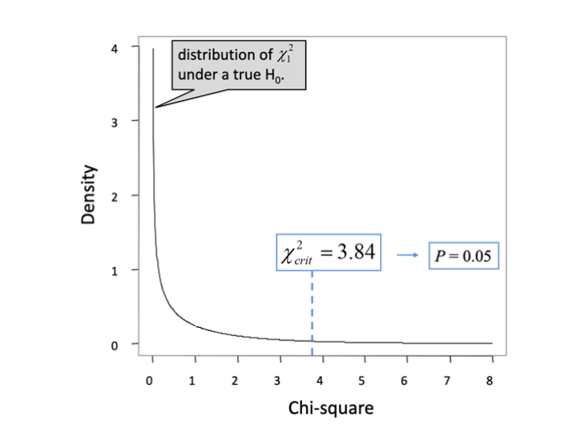
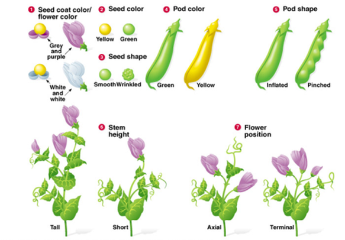
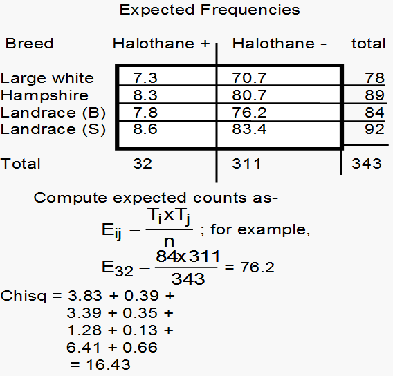

| Halothane.positive | Halothane.negative | Totals | |
|---|---|---|---|
| Large White | 2 | 76 | 78 |
| Hampshire | 3 | 86 | 89 |
| Landrace(B) | 11 | 73 | 84 |
| Landrace(S) | 16 | 76 | 92 |
| Totals | 32 | 311 | 343 |
Chapter 5:
Tabulated Counts
Analysing frequencies
This chapter focuses on data that consist of frequencies or counts of occurrences of some events
Wish to compare observed with what we would have expected
We will cover the \(\chi ^ 2\) distribution, “Goodness-of-fit” tests, and test of independence
Chi squared distribution
Continuous 0 to infinity; starts at 0 because it is a square (a square number can’t be negative)
The mean of this distribution is its degrees of freedom (k)
It is right skewed, mean greater than median and mode; variance is \(2k\)
Shape of the \(\chi ^ 2\) distribution is determined by the degrees of freedom (k), at very high k (90 or greater) \(\chi ^ 2\) distribution resembles the normal distribution
Main purpose is hypothesis testing, not describing real-world distributions

Tables and frequencies
We often have hypotheses regarding the frequencies of levels of a factor or group of factors.
For a single two-level factor (e.g., male vs female, survived vs died), we might wish to know how likely the data are to have come from a population with equal proportions (or some other specified proportion).
For two factors, we might wish to know whether they are independent.
In either case, we can specify a null hypothesis and test it using data.
To do so, compare observed counts with expected counts, where the expected counts are derived from our null model about the population.
We are employing the Chi-squared statistic with data which consists of integers. That is, the data are discrete rather than continuous.
Examples of data with one factor
Example 1
- A dataset contains 40 males and 50 females.
- How plausible is the null model of these counts coming from a population with 50% males and 50% females?
- The expected counts in this case would be 45 males and 45 females.
Examples of data with one factor
Example 2
- Does the distribution of rejects of metal castings by causes in a particular week vary from the long-term average counts?
- Treat the long-term average counts as the expected counts.
- Compare observed counts with expected counts.
| Causes of rejection | Rejects during the week | Long-term average |
|---|---|---|
| sand | 90 | 82 |
| misrun | 8 | 4 |
| shift | 16 | 10 |
| drop- | 8 | 6 |
| corebreak | 23 | 21 |
| broken | 21 | 20 |
| other | 5 | 8 |
Chi-squared test statistic
\[ \chi ^{2} =\sum _{1}^{c}\frac{\left({\rm Observed-Expected}\right)^{{\rm 2}} }{{\rm Expected}} =\sum _{1}^{c}\frac{\left( O-E\right)^{2}}{E} \]
If the number of categories is \(c\), then the degrees of freedom is \(c-1\).
Chi-squared test statistic
If the null hypothesis were true, then the value of \(\chi ^{2}\) calculated from our data is a random value from a Chi-squared distribuion: \[ \chi_{0} ^{2} = \chi_{c-1} ^{2} \] Once we calculate the test statistic, we can compare our observed value with its distribution under \(H_{0}\) to calculate a p-value.
Assumptions
The classification of observations into groups must be independent
No more than 20% of categories should have expected counts less than 5
Goodness of fit test
Compare observed frequencies with expected frequencies under some specified null hypothesis.
Make a hypothesis about the population, what would we expect the frequency to be under that hypothesis?
For example:
- Wish to compare the frequency of occurence of different phenotypes in an organism with the frequencies we would expect under Mendel’s laws of inheritance.
- Wish to compare the distribution of a observation with expected count we would obtain from a Poisson distribution.
Hypotheses of this sort can be tested using the Chi-squared test statistic (\(\chi ^ 2\) = Ki Sq.)
Example
A survey of voters included 550 males and 450 females. Will you call this survey as a biased one?
Here the null hypothesis is that the ratio of males to females is 1:1.
Equivalent: the proportion of males is equal to the proportion of female in the population
| Gender | \(O\) | \(E\) | \((O-E)^2/E\) |
|---|---|---|---|
| male | 550 | 500 | \((550-500)^2/ 500=5\) |
| female | 450 | 500 | \((450-500)^2/ 500=5\) |
| sum | 1000 | 1000 | 10 |
\[ \chi ^{2} = \sum _{1}^{c}\frac{\left( O-E\right)^{2}}{E} = \frac{(550-500)^2}{500} + \frac{(450-500)^2}{500} = 10 \]
Example
- df= (2-1)=1
- At 5% level (\(\alpha =0.05\)), the critical value is only 3.84. So the sample is a biased one.
Mendel’s experiment (see Study Guide)
Mendel discovered the principles of heredity by breeding garden peas. In one Mendel’s trials ratios of various types of peas (dihybrid-crosses) were 9:3:3:1
The observed results are very close to expected results. This results in a small chi squared value. Were experimental results fudged or was there a confirmation bias?

Goodness of fit for distributions
- Treat class intervals as categories and obtain the actual counts (O)
- The assumed distribution gives the expected counts (E)
- Perform a goodness of fit and validate the assumed theoretical distribution
- Adjust the degrees of freedom (df) for the number of estimated parameters of the theoretical distribution
- For example, assume that you have 10 class intervals and test for normal distribution, which has 2 parameters.
- So the df for this test will be 10-1-2=7.
- For example, assume that you have 10 class intervals and test for normal distribution, which has 2 parameters.
Goodness of fit for distributions example
A safety inspector monitors car accidents at a bustling intersection. The inspector enters the counts of monthly accidents.
Null: The sample data follow the Poisson distribution. Alternative: The sample data do not follow the Poisson distribution.
Note The Poisson distribution is a discrete probability distribution (integers) that can model counts of events or attributes in a fixed observation space. Many but not all count processes follow this distribution.
Goodness of fit for distributions example
| Accidents | \(O\) | \(E\) | \((O-E)^2/E\) |
|---|---|---|---|
| 0 | 7 | ||
| 1 | 8 | ||
| 2 | 13 | ||
| 3 | 10 | ||
| >=4 | 12 | ||
| Sum | 40 |
Conclusion:
Tests of Independence
In some cases, we have counts of observations cross-classified in terms of two factors.
We are generally interested in determining whether or not the two factors are independent.
If we consider the observations falling into each category for factor 1, is this distribution consistent across all levels of factor 2? (or vice versa)
Contingency table
Given a two way table of frequency counts, we test whether the row and column variables are independent
Hypotheses:
- Null: the two factors are independent
- written another way: the row (or column) distributions are the same
The expected count for cell \((i,j)\) is given by \(E_{ij}\) = \((T_i \times T_j)/n\) where
\(~~~~~T_i\), the total for row \(i\);
\(~~~~~T_j\), the total for column \(j\)
\(~~~~~n\), the overall total countTest statistic : \(\chi ^{2} =\sum _{{i=1}}^{r}\sum _{{j=1}}^{{\rm c}}\frac{\left({ O}_{{ ij}} { -E}_{{ij}} \right)^{{ 2}} }{{ E}_{{ij}} }.\)
degrees of freedom: \((r-1)(c-1)\)
Example
Context: Porcine Stress Syndrome (PSS) result in pale, soft meat in pigs and under conditions of stress- death.
- Presence of PPS is a positive reaction to breathing halothane.
- Selective breeding for reducing incidence of PSS
Example
| Halothane.positive | Halothane.negative | Totals | |
|---|---|---|---|
| Large White | 2 | 76 | 78 |
| Hampshire | 3 | 86 | 89 |
| Landrace(B) | 11 | 73 | 84 |
| Landrace(S) | 16 | 76 | 92 |
| Totals | 32 | 311 | 343 |
Computations
| Halothane.positive | Halothane.negative | Totals | |
|---|---|---|---|
| Large White | 2 | 76 | 78 |
| Hampshire | 3 | 86 | 89 |
| Landrace(B) | 11 | 73 | 84 |
| Landrace(S) | 16 | 76 | 92 |
| Totals | 32 | 311 | 343 |

Inference
- The tabulated Chisq with (4-1)x(2-1) = 3 d.f are
- 7.81 at 5% level; 16.27 at 1% level.
Conclusion: There is a statistical evidence that the breed is not independent of the result of the Halothane test.
- Note that large counts in the second column (Halothane negative) lead to large expected values but low contributions to chi-squared statistic.
- This is because of the division by the appropriate expected value. On the other hand, the small observations of first column lead to small expected values but large contributions to the \(\chi ^{2}\).
Significant cell contribution
Counts follow Poisson distribution for which mean = variance
Hence \(\chi^{2}=\sum \frac{\left({\rm residual}\right)^{{\rm 2}} }{{\rm variance}} =\sum \left(\frac{{\rm residual}}{{\rm std\; dev}} \right)^{2}.\)
Individual cell contribution is similar to standardized residual. Any standardized residual greater than 2 is regarded as significant.
So \(2^2 = 4\) is treated as a significant contribution to the \(\chi ^{2}\) statistic.
Warnings
Use only frequency counts. Use of percentages in place of counts may lead to incorrect conclusions.
Check for small expected values. An expected value of less than 5 may lead to concern and a very small value of less than 1 is a warning. Sometimes, you can merge/combine categories in case of small expected counts.
If the chi-squared statistic is small enough to be not significant, there is no problem.
If chi-squared statistic is significant, check the contributions to each cell. If cells with large expected value (>5) contribute a large amount to chi-squared statistic, again there is no problem.
If cells with expected values less than 5 lead large contributions to chi-squared statistic, the significance of the chi-squared statistic should be treated with caution.
Simpson’s paradox
Group 1
[,1] [,2]
[1,] 80 120
[2,] 30 80
Pearson's Chi-squared test with Yates' continuity correction
data: group1
X-squared = 4.4809, df = 1, p-value = 0.03428Group 2
[,1] [,2]
[1,] 20 75
[2,] 25 20
Pearson's Chi-squared test with Yates' continuity correction
data: group2
X-squared = 15.122, df = 1, p-value = 0.0001008After amalgamation of both groups
[,1] [,2]
[1,] 100 195
[2,] 55 100
Pearson's Chi-squared test with Yates' continuity correction
data: all
X-squared = 0.053808, df = 1, p-value = 0.8166Permutation test
This test is done maintaining the marginal totals.
Data: Smoking Status vs. Staff Groupings| None | Moderate | Heavy | Totals | |
|---|---|---|---|---|
| Junior employees | 18 | 57 | 13 | 88 |
| Junior managers | 4 | 10 | 4 | 18 |
| Secretaries | 10 | 13 | 2 | 25 |
| Senior employees | 25 | 22 | 4 | 51 |
| Senior managers | 4 | 5 | 2 | 11 |
| Totals | 61 | 107 | 25 | 193 |
Permutation test
Pearson's Chi-squared test with simulated p-value (based on 2000
replicates)
data: tabledata
X-squared = 15.672, df = NA, p-value = 0.04948Regular Chi-square test
Correspondence Analysis
Correspondence Analysis is an exploratory statistical technique for assessing the interdependence of categorical variables whose data are presented primarily in the form of a two-way table of frequencies
Data: Smoking Status vs. Staff Groupings None Moderate Heavy
Junior employees 18 57 13
Junior managers 4 10 4
Secretaries 10 13 2
Senior employees 25 22 4
Senior managers 4 5 2
Pearson's Chi-squared test
data: tabledata
X-squared = 15.672, df = 8, p-value = 0.04733Row mass & row profiles
row profiles are found dividing the cell counts by the corresponding row total
row mass is found dividing the row totals by the grand total
None Moderate Heavy
Junior employees 0.205 0.648 0.1477
Junior managers 0.222 0.556 0.2222
Secretaries 0.400 0.520 0.0800
Senior employees 0.490 0.431 0.0784
Senior managers 0.364 0.455 0.1818
rowmass 0.316 0.554 0.1295- Similarly column profiles & column masses can be found
Graphical display of row profiles

- No clear patterns seen
Symmetric plots to find subgrouping
Call:
CA(X = tabledata)
The chi square of independence between the two variables is equal to 15.7 (p-value = 0.0473 ).
Eigenvalues
Dim.1 Dim.2
Variance 0.074 0.008
% of var. 90.570 9.430
Cumulative % of var. 90.570 100.000
Rows
Iner*1000 Dim.1 ctr cos2 Dim.2 ctr cos2
Junior employees | 26.268 | -0.235 34.372 0.962 | -0.047 12.934 0.038 |
Junior managers | 8.784 | -0.236 7.042 0.590 | 0.197 47.082 0.410 |
Secretaries | 5.618 | 0.195 6.670 0.873 | -0.074 9.301 0.127 |
Senior employees | 37.894 | 0.379 51.521 1.000 | 0.004 0.045 0.000 |
Senior managers | 2.636 | 0.071 0.394 0.110 | 0.203 30.638 0.890 |
Columns
Iner*1000 Dim.1 ctr cos2 Dim.2 ctr cos2
None | 49.186 | 0.394 66.705 0.997 | 0.020 1.688 0.003 |
Moderate | 15.679 | -0.157 18.619 0.873 | -0.060 25.941 0.127 |
Heavy | 16.335 | -0.289 14.676 0.661 | 0.207 72.371 0.339 |Symmetric plots to find subgrouping

Summary
Goodness of fit is for testing whether the observed counts are from the hypothesised population groups.
- For \(c\) categories (groups), the test involves \(c-1\) df.
Contingency Table (\(r\) rows and \(c\) columns) data are tested for the independence.
- For \(r\times c\) cells the test involves \((r-1)(c-1)\) df
\(\chi ^{2}\) test works well if \(E> 5\). Some could be as low as 1.
Do correspondence analysis (symmetric plots) when independence is rejected.